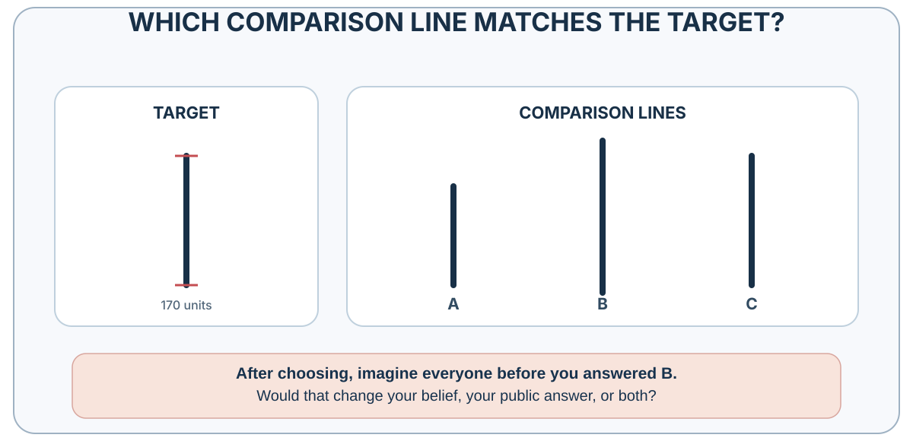

26 Social Norms and Conformity
When Other People Become Evidence
How public behavior becomes evidence, pressure, and a mirror that can mislead
“An informational social influence may be defined as an influence to accept information obtained from another as evidence about reality.”
— Morton Deutsch and Harold B. Gerard, “A Study of Normative and Informational Social Influences upon Individual Judgment”, 1955, p. 629
A hiring committee hears the chair describe a candidate as “an obvious leader.” Around the table, heads nod. One member had doubts about the work sample but now wonders whether the others saw something she missed; another shares those doubts but does not want to hold up the decision. Their agreement looks the same from outside, although one may be revising a belief and the other withholding it.
What would the committee need to know before treating the nods as independent support?
Learning goals
- Treat conformity as an observed outcome, then distinguish informational learning, normative pressure, coordination, identity, and correlated copying as possible causes.
- Distinguish descriptive, injunctive, and dynamic norms; empirical and normative expectations; social proof; pluralistic ignorance; and information cascades.
- Redesign one meeting or norm message so private evidence is elicited before public influence begins.
Other people as living data
A new employee watches how colleagues handle an approaching deadline. Several submit without a final check, and the most experienced person says the check is unnecessary. Following them could save time because they know the system—or copy a mistake that nobody has tested.
People often learn selectively from prestigious, successful, similar, or numerous others. Those cues can be useful when they track relevant knowledge (Henrich & Gil-White, 2001; Boyd & Richerson, 1985). They are also fallible: prestige can spill across domains, success can reflect luck, and a majority can repeat one person’s claim. Shared attention and teaching make cultural learning possible, but they do not make each public signal accurate (Tomasello, 1999; Tomasello et al., 2005; Boyd et al., 2011).
For the employee, the next useful step is to ask what the check was designed to catch and whether colleagues have independent evidence that it can be omitted. That question uses their experience while keeping the underlying problem in view.
Conformity is an outcome, not a mechanism
Sherif’s autokinetic studies asked people to estimate the apparent movement of a stationary light in darkness. Individual estimates varied; group estimates converged (Sherif, 1936). Under ambiguity, other judgments provided information and a shared norm emerged.
Asch’s line-judgment studies made the answer much easier to see. A participant compared a target line with three alternatives, but heard other people give their answers first. Those people were working with the experimenter and deliberately agreed on a wrong line in twelve critical trials. Across 123 male college students, 36.8% of critical responses followed the wrong majority; a separate group of 37 judging independently made errors on 0.7% of those comparisons (Asch, 1956). The first percentage describes responses across trials, not the proportion of people who always conformed.
Unanimity mattered. In the supporting-partner conditions summarized by Asch (1955), a truthful ally reduced erroneous answers to roughly one quarter of the frequency under a unanimous majority. The lines had not become clearer; the social situation had changed. Deutsch and Gerard (1955) distinguished informational influence, following others to be correct, from normative influence, following to avoid disapproval or visible deviance. Real situations mix them.

Conformity describes movement toward a group pattern. The committee’s nods illustrate why the observation needs an explanation: learning something and withholding a doubt can produce the same public agreement.
Conformity is not inherently defective. Shared conventions make traffic, queues, meetings, and safety routines possible. The danger is that public agreement does not reveal private belief. Group size, task ambiguity, status, public response, and unanimity change the pressure; even one dissenter can make disagreement socially possible. The organizational question is therefore: What would someone hesitate to say here, even if it were true?
Social proof is a cue; a cascade is a mechanism
Social proof is a useful practitioner label for treating other people’s visible behavior as a cue. It is not a separate scientific mechanism. The cue may work because others appear informed, because approval matters, because a convention solves coordination, or because identity makes one group especially relevant. The proper diagnostic question is not merely whether social proof is present, but what the public behavior is being taken to prove.
Public behavior can also conceal private belief. In pluralistic ignorance, people privately doubt or reject a position yet misperceive others as accepting it because everyone observes the same cautious public behavior (Prentice & Miller, 1993). This is not simply conformity, and it is not false consensus. The misperception concerns the group’s private view, which public silence or compliance fails to reveal. Authority, Groupthink, and Shared Responsibility develops how this pattern can delay action and suppress warnings.
An information cascade is more specific than popularity, herding, or conformity. In a sequence of decisions, later actors can rationally set aside a private signal because earlier actions appear sufficiently informative; once that happens, additional actions add visibility without adding independent evidence (Bikhchandani et al., 1992). Social proof is the cue that others acted; a cascade is one possible process through which sequential public actions overwhelm private information.

Do not diagnose every convergence as both a cascade and conformity pressure. An informational cascade can arise because earlier actions appear informative even when dissent is safe. Normative conformity can arise because disagreement is socially costly even when nobody thinks the majority knows more. The routes can interact, but the evidence needed to test them differs.
Digital counts make the dual role visible. Ratings, likes, downloads, and bestseller labels report earlier choices and influence later choices. In Salganik et al.’s (2006) experimental cultural markets, showing download counts made success more unequal and outcomes more variable across parallel worlds. Quality still mattered, but early accidents were amplified.

Popularity may reflect quality and partly produce the success later used to validate it. The experimental comparison helps separate those directions in a way that an ordinary bestseller list cannot.
Independence before discussion
The hiring committee needs discussion to exchange what its members know. Yet starting with public judgments can change those judgments before anyone records the independent evidence. Preserve the initial views first, then use discussion to compare and improve them:
- Elicit initial judgments, forecasts, or concerns privately.
- Preserve reasons and confidence, not only a vote.
- Display the distribution before the highest-status person argues.
- Invite the strongest contrary evidence and one designated ally for dissent.
- Deliberate, revise, and record what changed.
Discussion still matters. The sequence preserves the evidence needed to tell whether agreement followed learning or merely followed the first speaker.
Use Table 26.2 to audit the cue behind an apparent consensus before treating the consensus as additional evidence.
Asch-type conformity varies across periods, cultures, tasks, and response conditions (Bond & Smith, 1996).
Practice Lab
Redesign one hiring, investment, safety, or project meeting. Produce a before-and-after process map showing when private signals are collected, what social information is displayed, whose judgments may be correlated, how one dissenter receives an ally, and how revisions are recorded. Add one descriptive norm message, one injunctive version, and—only if the trend is verified—one dynamic version. Name the reference group and state the backfire risk of each.
Take it forward
The committee can start its next meeting with written assessments of the work sample, collected before the chair speaks. When members later agree, their reasons and revisions remain visible. The group still benefits from discussion, while preserving evidence that a quick round of nods would have concealed.
When many people learn from the same visible signal and from one another, social evidence can become a feedback system. Prices as Social Signals provides a demanding application: price is both an aggregate outcome of earlier judgments and an input into later attention, prediction, and action.
Social learning lets people use discoveries they could not reproduce alone. A medical student can learn germ theory and clinical routines without independently deriving either.
Cumulative culture depends on social transmission with enough fidelity to preserve useful practices and enough variation to improve them. Human groups can retain techniques whose causal structure is not obvious to any one learner. Over generations, tools and institutions become more complex than a single person could plausibly invent alone (Boyd & Richerson, 1985; Henrich, 2016; Tomasello, 1999).
That dependence becomes especially useful when a practice contains knowledge the learner cannot yet inspect. It also creates the risk examined in the main chapter: copying can preserve a useful routine or reproduce an untested error.
Copying and cumulative culture

Observation and imitation do not automatically produce cumulative culture. Accumulation also requires some source of variation or innovation, sufficient transmission and retention, and processes that preserve, select, or correct practices across learners or generations. The mixture differs across settings.
In a classic comparison, human children and chimpanzees watched an adult retrieve a reward from a puzzle box. Some demonstrated actions were causally necessary; others were not. When the box was transparent and the mechanism visible, chimpanzees tended to omit irrelevant actions and reproduce the efficient route. Children often copied both relevant and irrelevant steps (Horner & Whiten, 2005).
At first glance, the chimpanzee looks more rational. It extracts the causal structure and ignores theater. Yet children’s tendency toward overimitation may serve a different problem. A learner cannot always know which step is irrelevant. A tap, gesture, sequence, or preparation may carry hidden causal information, social meaning, safety value, or conventional significance. High-fidelity copying can preserve opaque practices until their function becomes clear (Lyons et al., 2007).
Human copying is sensitive to intention, pedagogy, group membership, convention, and context. It can preserve needless bureaucracy as effectively as useful craft. An organization may continue a reporting ritual because “this is how it is done” even after the original risk has vanished.
Before removing a copied step, ask what hidden function it might preserve and what evidence could test whether that function is still needed.
Mimicry and synchrony
People in conversation often align without noticing. Posture, facial movements, speech rhythm, word choice, and gestures can become more similar. Chartrand and Bargh (1999) called this the chameleon effect: nonconscious behavioral mimicry that can increase interpersonal smoothness and liking. Some experiments have also found more helping after participants were mimicked, while reviews show that the effect depends on the relationship and setting (van Baaren et al., 2004; Chartrand & Lakin, 2013).

Mimicry effects vary with relationship, status, goals, awareness, and how conspicuous the copying becomes. An interaction may feel smoother when people adjust to one another’s tempo, while obvious imitation may feel mocking.
Adjusting to another person’s tempo can communicate attention. Using imitation to bypass their judgment turns apparent rapport into covert pressure; smoother interaction alone does not make that objective defensible.
Social observation also requires causal explanation. When a colleague misses a deadline, the attribution audit developed in Beliefs That Defend Themselves asks which evidence would distinguish character, incentive, information, and constraint accounts before a convenient story selects the next policy.
References cited in this chapter
Asch, S. E. (1955). Opinions and social pressure. Scientific American, 193(5), 31–35. https://doi.org/10.1038/scientificamerican1155-31
Asch, S. E. (1956). Studies of independence and conformity: I. A minority of one against a unanimous majority. Psychological Monographs: General and Applied, 70(9), 1–70.
Bicchieri, C. (2006). The grammar of society: The nature and dynamics of social norms. Cambridge University Press.
Bikhchandani, S., Hirshleifer, D., & Welch, I. (1992). A theory of fads, fashion, custom, and cultural change as informational cascades. Journal of Political Economy, 100(5), 992–1026.
Bond, R., & Smith, P. B. (1996). Culture and conformity: A meta-analysis of studies using Asch’s line judgment task. Psychological Bulletin, 119(1), 111–137.
Boyd, R., & Richerson, P. J. (1985). Culture and the evolutionary process. University of Chicago Press.
Boyd, R., Richerson, P. J., & Henrich, J. (2011). The cultural niche: Why social learning is essential for human adaptation. Proceedings of the National Academy of Sciences, 108(Supplement 2), 10918–10925.
Chartrand, T. L., & Bargh, J. A. (1999). The chameleon effect: The perception-behavior link and social interaction. Journal of Personality and Social Psychology, 76(6), 893–910.
Chartrand, T. L., & Lakin, J. L. (2013). The antecedents and consequences of human behavioral mimicry. Annual Review of Psychology, 64, 285–308.
Cialdini, R. B., Demaine, L. J., Sagarin, B. J., Barrett, D. W., Rhoads, K., & Winter, P. L. (2006). Managing social norms for persuasive impact. Social Influence, 1(1), 3–15.
Cialdini, R. B., Reno, R. R., & Kallgren, C. A. (1990). A focus theory of normative conduct. Journal of Personality and Social Psychology, 58(6), 1015–1026.
Deutsch, M., & Gerard, H. B. (1955). A study of normative and informational social influences upon individual judgment. Journal of Abnormal and Social Psychology, 51(3), 629–636.
Dunbar, R. I. M. (1992). Neocortex size as a constraint on group size in primates. Journal of Human Evolution, 22(6), 469–493.
Goldstein, N. J., Cialdini, R. B., & Griskevicius, V. (2008). A room with a viewpoint: Using social norms to motivate environmental conservation in hotels. Journal of Consumer Research, 35(3), 472–482.
Henrich, J. (2016). The secret of our success: How culture is driving human evolution, domesticating our species, and making us smarter. Princeton University Press.
Henrich, J., & Gil-White, F. J. (2001). The evolution of prestige: Freely conferred deference as a mechanism for enhancing the benefits of cultural transmission. Evolution and Human Behavior, 22(3), 165–196.
Horner, V., & Whiten, A. (2005). Causal knowledge and imitation/emulation switching in chimpanzees (Pan troglodytes) and children (Homo sapiens). Animal Cognition, 8(3), 164-181.
Inoue, S., & Matsuzawa, T. (2007). Working memory of numerals in chimpanzees. Current Biology, 17(23), R1004–R1005.
Lyons, D. E., Young, A. G., & Keil, F. C. (2007). The hidden structure of overimitation. Proceedings of the National Academy of Sciences, 104(50), 19751–19756.
Martin, C. F., Bhui, R., Bossaerts, P., Matsuzawa, T., & Camerer, C. (2014). Chimpanzee choice rates in competitive games match equilibrium game theory predictions. Scientific Reports, 4, 5182.
Nolan, J. M., Schultz, P. W., Cialdini, R. B., Goldstein, N. J., & Griskevicius, V. (2008). Normative social influence is underdetected. Personality and Social Psychology Bulletin, 34(7), 913–923.
Prentice, D. A., & Miller, D. T. (1993). Pluralistic ignorance and alcohol use on campus: Some consequences of misperceiving the social norm. Journal of Personality and Social Psychology, 64(2), 243–256.
Salganik, M. J., Dodds, P. S., & Watts, D. J. (2006). Experimental study of inequality and unpredictability in an artificial cultural market. Science, 311(5762), 854–856.
Sallet, J., Mars, R. B., Noonan, M. P., Andersson, J. L., O’Reilly, J. X., Jbabdi, S., Croxson, P. L., Jenkinson, M., Miller, K. L., & Rushworth, M. F. S. (2011). Social network size affects neural circuits in macaques. Science, 334(6056), 697–700.
Schultz, P. W., Nolan, J. M., Cialdini, R. B., Goldstein, N. J., & Griskevicius, V. (2007). The constructive, destructive, and reconstructive power of social norms. Psychological Science, 18(5), 429–434.
Sherif, M. (1936). The psychology of social norms. Harper.
Sparkman, G., & Walton, G. M. (2017). Dynamic norms promote sustainable behavior, even if it is counternormative. Psychological Science, 28(11), 1663–1674.
Tomasello, M. (1999). The cultural origins of human cognition. Harvard University Press.
Tomasello, M., Carpenter, M., Call, J., Behne, T., & Moll, H. (2005). Understanding and sharing intentions: The origins of cultural cognition. Behavioral and Brain Sciences, 28(5), 675–691.
van Baaren, R. B., Holland, R. W., Kawakami, K., & van Knippenberg, A. (2004). Mimicry and prosocial behavior. Psychological Science, 15(1), 71-74.
Social norms require a reference group
A social norm is not simply a behavior that many people perform. It concerns expectations within a relevant reference group: whose behavior is treated as typical, whose approval matters, and what people expect after compliance or violation. Bicchieri (2006) distinguishes empirical expectations—beliefs about what relevant others do—from normative expectations—beliefs about what relevant others think one ought to do. Both must be distinguished from a person’s own preference. Cooperation and Social Preferences develops how norms and social preferences require different evidence and how norm judgments can be elicited.
In the focus theory of normative conduct, a descriptive norm reports what people do, while an injunctive norm reports what people approve or disapprove of (Cialdini et al., 1990). The distinction matters because a message can condemn a behavior while advertising that it is common. A late-night email may reveal that many colleagues work late without showing that they approve of the expectation. Silence in a meeting may reveal what people publicly do without revealing what they privately believe.
Hotel guests were more likely to reuse towels when a sign described reuse by guests in the same room than under a standard environmental appeal in Goldstein et al.’s (2008) setting. Schultz et al. (2007) found that high-using households reduced energy use after comparison with neighbors, but low-using households could increase unless an injunctive approval cue accompanied the feedback. These results illustrate both social information and a boomerang risk.
When undesirable behavior is common, broadcasting its prevalence can normalize it. In a national-park field study, 7.92% of marked pieces of petrified wood were stolen under a sign emphasizing how many visitors took wood, compared with 1.67% under a sign asking visitors not to remove it (Cialdini et al., 2006). A truthful design should therefore test the reference group, prevalence, privacy, and whether an injunctive or dynamic norm communicates the goal without making harm look ordinary.
A dynamic norm reports a verified direction of change when the desired behavior is not yet common—for example, that more households are reducing food waste—rather than pretending that the majority has already changed (Sparkman & Walton, 2017). It describes a trend, not current majority status. Choice Architecture develops when this design can help and the safeguards it requires. People may also underdetect how strongly descriptive norms affect their own behavior, which is one reason introspection alone is a poor norm audit (Nolan et al., 2008).